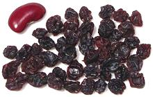

SAFARI
Users
Gooseberries & Currants
[genus Ribes] What is a gooseberry and what is a currant is rather unclear - it's mainly a matter of tradition. There are many wild species of Ribes, even many here in California (a few go as far south as the Mexican border), and most produce edible berries, but the ones listed here are those in substantial cultivation for culinary use.
Gooseberry[Ribes hirtellum (North American) | Ribes uva-crispa (European / Asian) and other species] Native to North America (R. hirtellum) Europe, southwestern Asia (R. uva-crispa), these straggling spiny bushes produce berries that are rather tart. They are usually used to make jams and deserts where the tartness is tempered by sugar, but in Portugal and some other regions they are used in beverages. Gooseberry production is almost entirely within Europe, with Russia the largest producer. The photo specimens, identifiable as R. hirtellum as there
are no bristles on the fruit and from the mix of green and red, were
up to 0.66 inches diameter and weighed 15 to the ounce on average.
These were obtained at the absurd price of nearly US $1 per ounce
from Whole Foods Market. At that pricing you certainly aren't going
to make much jam, and that makes them nothing more than a curiosity
for yuppies.
Blackcurrant[Cassis, gadellier noir (French); Schwarze Johannisbeere (German); Ribes nigrum] This small shrub (3 to 5 feet high) is native to central and northern Europe and northern Asia. The fruit is a berry about 1/2 inch in diameter and a mature bush can produce up to 10 pounds during a summer. Blackcurrent syrup was the main source of vitamin C in the UK during World War II and has remained a popular flavoring for beverages, particularly "Cider & Black" and to enhance the flavor of Guinness. Outside the UK it is much used for jams and to flavor many confections and ice cream as well as liqueurs. In Russia the leaves are also used as a flavoring in teas, preserves and vodka. Black current is also used as a flavoring for many sauces used with meat, often by including jam or jelly. Commercial production is almost entirely within Europe, with Russia
the top producer. Production was banned in the United States for
almost the entirety of the 20th century, due to fear of white pine
blister rust, but production is now legal in a number of states and
increasing in New York, Connecticut, Vermont and Oregon. The photo
specimens were from Lithuania, purchased frozen from a large
multi-ethnic market in Los Angeles (Sunland).
Redcurrant[Red Currant; Johannisbeeren (Germany); Ribes rubrum] Native to parts of Western and Central Europe and as far south as northern Spain and Italy, this shrub grows to 3 to 5 feet high and can produce up to 8 pounds of berries in the mid to late summer. Fruit size ranges from 0.31 to 0.47 inches diameter. Commercial production is almost entirely within Europe, with Russia the top producer. I presume that in the United States it was subjected to the same ban as for black current. The photo specimens, the largest about 0.4 inches diameter, were California grown and purchased at a certified farmer's market in Pasadena, CA - at the outrageous cost of US $1.25 per ounce. Fresh ripe redcurrants are tart-sweet weighted well to the tart side.
They may be served raw in salads or as garnishes but most of the production
goes to making jams and jellies. In the UK these are served as a condiment
with lamb, and may also be included in sauces. In Scandinavia these
berries are used in fruit soups.
Whitecurrant [Ribes glandulosum]
[Ribes glandulosum]
This is an albino cultivar of the Red Currant rather than a separate
species, but is somewhat smaller and sweeter. It is used, sometimes
along with red currents, to make products that are supposed to have a
"refined" image. Whitecurrant berries are also often
used raw to provide a sweet-tart flavor.
Photo by Jastrow distributed under license Creative
Commons
Attribution 3.0 Unported
Zante Currant [raisins de Corinthe sec (French); Vitis vinifera]
These are not actually currants but tiny sweet black seedless grapes
dried into raisins. When a recipe, usually a baking recipe, calls for
"currants" with no further description, this is what is meant. Dried
blackcurrants do exist in Europe but even there are uncommon.
California distributors like Sun-Maid call these raisins
"zante currants", but in the UK they're called just "currants". Here
in California the fresh grapes, both black and white, are sold as
"Champaign grapes" (after the bubbles - they aren't used to make
Champaign wine).
Jostaberry[Ribes x nidigrolaria]
Pronounced "Yostberry" this is the result of a complex cross breeding of
several Ribes species performed in Germany. It is midway between gooseberry
and blackcurrant in size. When not quite ripe it is much like gooseberry and
becomes more currant like when fully ripe. It is propagated by
cuttings and is currently available as a garden fruit plant, most commonly
in the UK. It is not currently used for commercial products.
Photo by Zualio distributed under license Creative
Commons
Attribution 3.0 Unported
Currant Jams & Jellies[Ribes species]
Currant jams and jellies are often called for in European recipes as an
ingredient in sauces or as topping or filling for baked goods. Here in
North America they aren't always easy to find when you need them.
Fortunately, sealed in their jars, they have very good shelf life. If a
jar should get a little mold on top, just spoon it off, discard and use
the rest. To the left in the photo is blackcurrant preserve and to the
right redcurrant jelly. Subst: sour cherry
jam or jelly is a reasonable, though not exact, substitute.
|
Jade Plant
[Friendship Tree; Rubber Tree (Eric Knight); Crassula ovata of family Crassulaceae]
Native to South Africa, this plant is not actually considered edible, but
I have so many of them growing here, completely without care or
maintenance even in the heat of a Southern California summer, I figured
they deserve a place on the Saxifrage page. Wikipedia says, "notoriously
easy to propagate". No kidding! Keeping them from taking over the world
is a bit more difficult. Leaves and branches break off very easily, and
within a few days will have rooted and started a new plant.